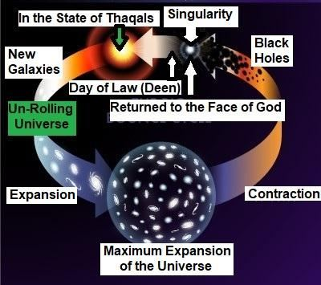

13cIV. Animals
13cIV। প্রাণী
All creatures will be resurrected, and there will be no death after resurrection, except for the salvation of some humans. The Hadith says that the animals will be merged with the earth after the Final Judgment, meaning they will be released into the Thaqal. Subsequently, the animals will be scattered across the galaxies. They will be robust and they will not be in pain.
সমস্ত প্রাণী পুনরুত্থিত হবে, এবং কিছু মানুষের পরিত্রাণ ব্যতীত পুনরুত্থানের পরে কোন মৃত্যু হবে না। হাদিসে বলা হয়েছে যে, শেষ বিচারের পর প্রাণীরা পৃথিবীর সাথে মিশে যাবে, অর্থাৎ তাদেরকে থাকালের মধ্যে ছেড়ে দেওয়া হবে। পরবর্তীকালে, প্রাণীগুলি ছায়াপথ জুড়ে ছড়িয়ে ছিটিয়ে থাকবে। তারা শক্ত হবে এবং তারা ব্যথা পাবে না।
14. Summary
14. সারাংশ
The universe (Samawaat) will collapse and then be revived. The Resurrection of the Dead will occur in the revived initial universe. The Final Judgment will take place on a specially created land. After the Judgment, the Believers will be transferred to another universe called Jannaat, while the sinners will be scattered across the galaxies of the re-created universe. These galaxies will serve as the objects of Hell.
মহাবিশ্ব (সামাওয়াত) ভেঙে পড়বে এবং তারপর পুনরুজ্জীবিত হবে। পুনরুজ্জীবিত প্রাথমিক মহাবিশ্বে মৃতদের পুনরুত্থান ঘটবে। চূড়ান্ত বিচার একটি বিশেষভাবে তৈরি জমিতে হবে। বিচারের পরে, বিশ্বাসীরা জান্নাত নামক অন্য মহাবিশ্বে স্থানান্তরিত হবে, যখন পাপীরা পুনঃসৃষ্ট মহাবিশ্বের ছায়াপথ জুড়ে ছড়িয়ে পড়বে। এই ছায়াপথগুলো নরকের বস্তু হিসেবে কাজ করবে।
FIGURE 39.10: The Un-Rolling Universe

চিত্র 39_10 / Figure 39_10
চিত্র 39.10: আন-রোলিং ইউনিভার্স
চিত্র 39_10 / Figure 39_10
An individual will be given a vast object of Jannaat or an entire galaxy from the Samawaat (this universe). He will live there forever as an empowered and honored vicegerent of Allah.
একজন ব্যক্তিকে জান্নাতের একটি বিশাল বস্তু বা সামওয়াত (এই মহাবিশ্ব) থেকে একটি সম্পূর্ণ গ্যালাক্সি দেওয়া হবে। তিনি সেখানে চিরকাল আল্লাহর একজন ক্ষমতাবান ও সম্মানিত ভাইসজার হিসেবে বসবাস করবেন।
―Soon shall We settle your affairs, O both ye Thaqalani (Two Heavy Masses). Then which of the favors of your Lord ye deny? O ye assemble of jinns and men! If it be ye can pass beyond the zones of the Skies and Lands (this universe), pass ye! Not without authority shall ye be able to pass! Then which of the favors of your Lord will ye deny? On you will be sent a flame of fire and a smoke; no defense will ye have. Then which of the favors of your Lord will ye deny? When the Sky (Collapsed Universe / Thaqal) is split (into two Thaqals), and it (main Thaqal) becomes red like red hide. Then which of the favors of your Lord will ye deny? On the day, no question will be asked of man or jinn as to his sin. Then which of the favors of your Lord will ye deny? The sinners will be known by their marks, and they will be scired by their forelocks and their feet. Then which of the favors of your Lord will ye deny? This is the hell which the sinners deny.‖ [Al Quran 55: 32-43]
- শীঘ্রই আমরা আপনার বিষয়গুলি মিটিয়ে দেব, হে উভয় থাকালানি (দুই ভারী ভর)। তাহলে তোমরা তোমাদের পালনকর্তার কোন কোন অনুগ্রহকে অস্বীকার করবে? হে জিন ও মানব সম্প্রদায়! যদি আপনি আকাশ এবং জমির অঞ্চল (এই মহাবিশ্ব) অতিক্রম করতে পারেন তবে আপনি পাস করুন! কর্তৃত্ব ছাড়া আপনি পাস করতে পারবেন না! তাহলে তোমরা তোমাদের পালনকর্তার কোন কোন অনুগ্রহকে অস্বীকার করবে? তোমাদের উপর আগুনের শিখা ও ধোঁয়া প্রেরণ করা হবে। তোমাদের কোন প্রতিরক্ষা থাকবে না। তাহলে তোমরা তোমাদের পালনকর্তার কোন কোন অনুগ্রহকে অস্বীকার করবে? যখন আকাশ (ধ্বংস মহাবিশ্ব / থাকাল) বিভক্ত হয় (দুটি থাকাল), এবং এটি (মূল থাকাল) লাল আড়ালের মতো লাল হয়ে যায়। তাহলে তোমরা তোমাদের পালনকর্তার কোন কোন অনুগ্রহকে অস্বীকার করবে? যেদিন মানুষ বা জিনকে তার গুনাহ সম্পর্কে কোন প্রশ্ন করা হবে না। তাহলে তোমরা তোমাদের পালনকর্তার কোন কোন অনুগ্রহকে অস্বীকার করবে? পাপীরা তাদের চিহ্ন দ্বারা পরিচিত হবে, এবং তারা তাদের কপাল এবং তাদের পায়ের দ্বারা তিরস্কার করা হবে। তাহলে তোমরা তোমাদের পালনকর্তার কোন কোন অনুগ্রহকে অস্বীকার করবে? এটি সেই জাহান্নাম যা পাপীরা অস্বীকার করে।'' [আল কুরআন 55: 32-43]